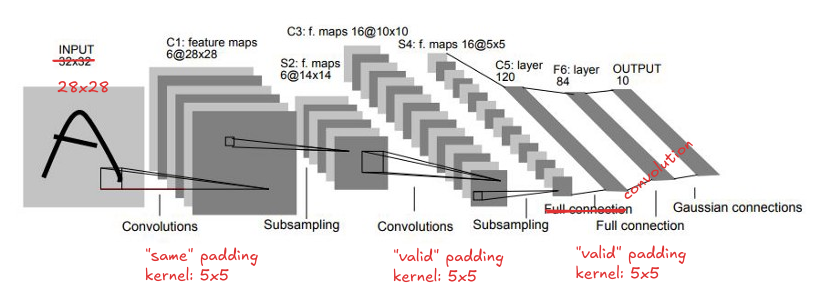
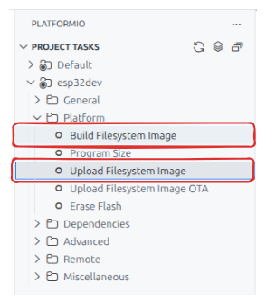
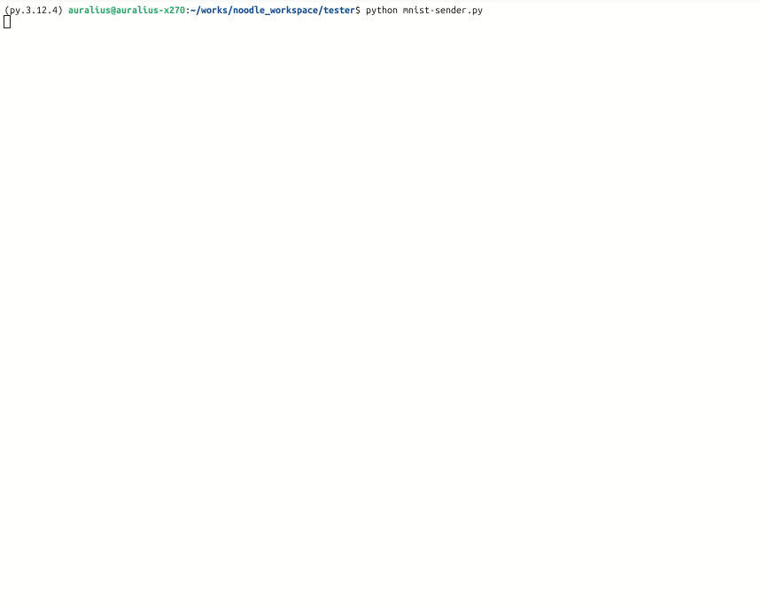
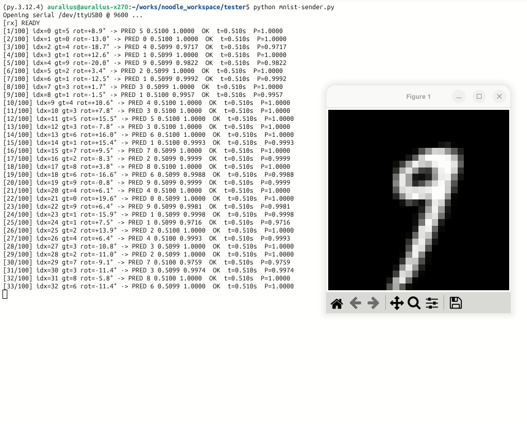

LeNet-5 on ESP32 with BIN File-Based CNN Parameters
Preface
-
Author:
Auralius Manurung (auralius.manurung@ieee.org) -
Repositories and resources:
- GitHub repository: Visual Studio Code and PlatformIO project
- Google Colab notebook
-
Video demonstration:

Overview
This example demonstrates how to run a slightly modified LeNet-5 network directly on an ESP32 using the Noodle inference library.
The complete application is designed around a realistic embedded inference scenario. A user draws a digit on a touchscreen, the input is converted into a normalized 28 × 28 image, and the ESP32 performs the neural-network inference on-device.
The system consists of:
- touchscreen-based digit acquisition,
- preprocessing and normalization,
- on-device CNN inference,
- parameter loading from either memory or file storage,
- and serial-based benchmarking.
This document focuses on the neural-network implementation using Noodle. The touchscreen preprocessing pipeline is intentionally kept outside the main discussion.
Implementation Plan
The complete deployment workflow is:
- Design and train the model on a computer, for example using Google Colab.
- Export the trained weights and biases as text files and C/C++ header files.
- Convert the exported
.txtparameter files into raw.binfiles. - Decide where each parameter should be stored:
- File storage, such as SD card, FFat, or LittleFS.
- In-memory storage, such as
constarrays in flash or arrays in SRAM/PSRAM. - Configure Noodle to read binary parameter files.
- Implement the network layer by layer using Noodle.
- Benchmark the implementation on the ESP32.
This example uses a hybrid strategy:
- Convolutional-layer parameters are loaded from
.binfiles, - Fully connected layer parameters are stored as
constarrays, - Intermediate activations are stored in RAM buffers.
Hardware: Cheap Yellow Display
The example is intended for an ESP32-based touchscreen board, commonly known as the Cheap Yellow Display (CYD).
The CYD usually includes:
- an ESP32 microcontroller,
- a 2.8-inch TFT display,
- a
320 × 240pixel resolution, - a resistive touchscreen,
- and an SD-card interface on many variants.
The TFT display and touch controller typically use SPI, often with separate chip-select lines. Some variants may use separate SPI buses. This is useful for applications such as handwriting input, where the program needs to update the display and track touch positions continuously.
As an alternative, Noodle can also be used with other touchscreen displays, such as MCUFRIEND-style UNO shields, where the TFT may use a parallel bus and the touch interface may use analog pins.
Original LeNet-5 Architecture
The original LeNet-5 architecture was designed for handwritten digit recognition. Its input is a 32 × 32 grayscale image, and the network uses convolution, subsampling, and fully connected layers.

| Layer | Type | Kernel / Stride | Input Shape | Output Shape | Notes |
|---|---|---|---|---|---|
| C1 | Convolution | 6 × 5 × 5 | 1 × 32 × 32 | 6 × 28 × 28 | tanh |
| S2 | Subsampling | 2 × 2 / 2 | 6 × 28 × 28 | 6 × 14 × 14 | Average pooling with learnable scale/bias |
| C3 | Convolution | 16 × 5 × 5 | 6 × 14 × 14 | 16 × 10 × 10 | tanh, sparse connection map |
| S4 | Subsampling | 2 × 2 / 2 | 16 × 10 × 10 | 16 × 5 × 5 | Average pooling |
| C5 | Convolution | 120 × 5 × 5 | 16 × 5 × 5 | 120 × 1 × 1 | Effectively a fully connected layer |
| F6 | Fully connected | — | 120 | 84 | tanh |
| Output | Fully connected | — | 84 | 10 | Euclidean RBF in the original formulation |
Modified LeNet-5 Architecture
For this example, we use a slightly modified version of LeNet-5.
The main changes are:
ReLUis used instead oftanh,- the original C5 convolution is implemented as flattening followed by a fully connected layer,
- the final output uses
softmax.
The original C5 layer uses 120 kernels of size 5 × 5 applied to 16 input feature maps. Since the input to C5 is already 16 × 5 × 5, this is equivalent to a dense layer from 400 → 120.
Therefore, in this implementation, C5 is replaced by:
Flatten: 16 × 5 × 5 → 400
FC: 400 → 120
| Layer | Type | Kernel / Stride | Input Shape | Output Shape | Notes |
|---|---|---|---|---|---|
| C1 | Convolution | 6 × 5 × 5 | 1 × 32 × 32 | 6 × 28 × 28 | ReLU |
| S2 | Subsampling | 2 × 2 / 2 | 6 × 28 × 28 | 6 × 14 × 14 | Average pooling |
| C3 | Convolution | 16 × 5 × 5 | 6 × 14 × 14 | 16 × 10 × 10 | ReLU |
| S4 | Subsampling | 2 × 2 / 2 | 16 × 10 × 10 | 16 × 5 × 5 | Average pooling |
| F5 | Flatten | — | 16 × 5 × 5 | 400 | 16 × 5 × 5 = 400 |
| F6 | Fully connected | — | 400 | 120 | ReLU |
| F7 | Fully connected | — | 120 | 84 | ReLU |
| Output | Fully connected | — | 84 | 10 | softmax |
Training and Export
Noodle is an inference library. It does not provide model training functionality.
In this example, the model is trained on a computer using Keras in Google Colab. After training, the weights and biases are exported and deployed to the ESP32.
Resources:
The exporter produces two kinds of files:
.txtfiles containing one floating-point value per line,.hfiles containing C/C++ arrays that can be compiled into the firmware.
In the current Noodle workflow, the .txt files are treated as an intermediate export format. Before uploading the model files to the ESP32 filesystem, the .txt files are converted into raw .bin files.
The .bin files are preferred for file-based inference because they avoid repeated text parsing on the microcontroller. Each value is stored directly as a little-endian float32, matching common MCU targets such as ESP32, STM32, and RP2040.
The .h files are still useful when parameters are stored as const arrays in flash.
Weight, Bias, and BIN File Naming Convention
The training notebook exports weights and biases using a simple layer-indexed naming convention.
Convolution Kernels
Filename format:
w<NN>.txt
<NN> is a two-digit, zero-padded layer index.
Example:
w01.txt
This file stores the convolution weights for the first convolutional layer. The full 4D tensor is serialized into a 1D sequence.
Dense Weights
Dense weights use the same naming convention:
w<NN>.txt
Example:
w03.txt
Dense weights are exported as a flattened array. In this example, they are arranged for Noodle's fully connected implementation, where weights are treated as row-major [n_outputs, n_inputs].
Bias Vectors
Biases use the following format:
b<NN>.txt
Example:
b02.txt
Each bias file contains a flattened 1D bias vector, with one value per line.
Converting TXT Files to BIN Files
The text files exported from the training notebook are easy to inspect, but they are inefficient for embedded inference. A text file requires the MCU to read characters, tokenize strings, and convert ASCII numbers into floating-point values.
For Noodle file-based inference, the recommended workflow is now:
Keras / PyTorch training
↓
TXT export from notebook
↓
TXT → BIN conversion on PC
↓
Upload BIN files to ESP32 filesystem
↓
Noodle reads raw float32 values
The conversion can be performed using txt2bin.py.
python3 txt2bin.py w01.txt b01.txt w02.txt b02.txt --out-dir data
For a full LeNet-5 export, the conversion can be written explicitly:
python3 txt2bin.py \
w01.txt b01.txt \
w02.txt b02.txt \
w03.txt b03.txt \
w04.txt b04.txt \
w05.txt b05.txt \
--out-dir data
This creates files such as:
data/w01.bin
data/b01.bin
data/w02.bin
data/b02.bin
data/w03.bin
data/b03.bin
data/w04.bin
data/b04.bin
data/w05.bin
data/b05.bin
The binary files contain raw float32 values with no header. The order of the values is exactly the same as in the original .txt file.
The converter writes values using little-endian float32 format:
<f4
This matches the native float representation used by common Noodle targets such as ESP32, STM32, and RP2040.
When binary files are used, Noodle must be configured to read files using the binary file format, for example by selecting the NOODLE_FILE_FORMAT_BIN option in the Noodle configuration.
Example Exported Files
After running the exporter, the output directory contains both .txt and .h files.
Example exporter output:
/content/drive/MyDrive/NOODLE/datasets/mnist/lenet-5/w01.txt
/content/drive/MyDrive/NOODLE/datasets/mnist/lenet-5/w01.h
/content/drive/MyDrive/NOODLE/datasets/mnist/lenet-5/b01.txt
/content/drive/MyDrive/NOODLE/datasets/mnist/lenet-5/b01.h
/content/drive/MyDrive/NOODLE/datasets/mnist/lenet-5/w02.txt
/content/drive/MyDrive/NOODLE/datasets/mnist/lenet-5/w02.h
/content/drive/MyDrive/NOODLE/datasets/mnist/lenet-5/b02.txt
/content/drive/MyDrive/NOODLE/datasets/mnist/lenet-5/b02.h
/content/drive/MyDrive/NOODLE/datasets/mnist/lenet-5/w03.txt
/content/drive/MyDrive/NOODLE/datasets/mnist/lenet-5/w03.h
/content/drive/MyDrive/NOODLE/datasets/mnist/lenet-5/b03.txt
/content/drive/MyDrive/NOODLE/datasets/mnist/lenet-5/b03.h
/content/drive/MyDrive/NOODLE/datasets/mnist/lenet-5/w04.txt
/content/drive/MyDrive/NOODLE/datasets/mnist/lenet-5/w04.h
/content/drive/MyDrive/NOODLE/datasets/mnist/lenet-5/b04.txt
/content/drive/MyDrive/NOODLE/datasets/mnist/lenet-5/b04.h
/content/drive/MyDrive/NOODLE/datasets/mnist/lenet-5/w05.txt
/content/drive/MyDrive/NOODLE/datasets/mnist/lenet-5/w05.h
/content/drive/MyDrive/NOODLE/datasets/mnist/lenet-5/b05.txt
/content/drive/MyDrive/NOODLE/datasets/mnist/lenet-5/b05.h
After conversion, the files uploaded to the ESP32 filesystem should be the .bin files:
/w01.bin
/b01.bin
/w02.bin
/b02.bin
In this example, only the convolutional-layer parameters are loaded from files. Therefore, only w01, b01, w02, and b02 are required in the filesystem. The fully connected layers are compiled into the firmware using the generated .h files.
Parameter Placement Strategy
On an embedded system, deciding where parameters are stored is part of the implementation.
For this example, the convolution layers use file-based parameters, while the fully connected layers use in-memory const arrays.
| Layer | Files | Location | In-memory const |
File-based |
|---|---|---|---|---|
| C1 | w01.bin, b01.bin |
FFat / file | ✓ | |
| C3 | w02.bin, b02.bin |
FFat / file | ✓ | |
| F6 | w03.h, b03.h |
Flash const |
✓ | |
| F7 | w04.h, b04.h |
Flash const |
✓ | |
| Output | w05.h, b05.h |
Flash const |
✓ |
This hybrid placement reduces firmware size pressure for the convolution parameters while keeping the fully connected layers fast.
Noodle Parameter Structures
For fully connected layers, Noodle provides two parameter structures:
/** FCN parameters stored as files. */
struct FCNFile {
const char *weight_fn = nullptr;
const char *bias_fn = nullptr;
Activation act = ACT_RELU;
};
/** FCN parameters stored in memory. */
struct FCNMem {
const float *weight = nullptr; // row-major [n_outputs, n_inputs]
const float *bias = nullptr;
Activation act = ACT_RELU;
};
Use FCNMem when weights and biases are compiled into the firmware as arrays.
Use FCNFile when weights and biases are read from files.
For convolution layers, the same idea applies:
ConvMemis used for in-memory convolution parameters,Convis used for file-based convolution parameters.
In this example, Conv points to .bin files, not .txt files. Therefore, the Noodle file backend should be configured for binary reading before inference.
Layer-by-Layer Implementation
The following implementation uses:
- file-based parameters for convolution layers,
- memory-based parameters for fully connected layers,
- RAM buffers for intermediate activations.
#include "noodle.h"
#include "w03.h"
#include "b03.h"
#include "w04.h"
#include "b04.h"
#include "w05.h"
#include "b05.h"
// Convolution layer #1: parameters from file
Conv cnn1;
cnn1.K = 5;
cnn1.P = 2;
cnn1.S = 1; // same padding
cnn1.weight_fn = "/w01.bin";
cnn1.bias_fn = "/b01.bin";
// Convolution layer #2: parameters from file
Conv cnn2;
cnn2.K = 5;
cnn2.P = 0;
cnn2.S = 1; // valid padding
cnn2.weight_fn = "/w02.bin";
cnn2.bias_fn = "/b02.bin";
// Average pooling
Pool pool;
pool.M = 2;
pool.T = 2;
// Fully connected layer #1: parameters from memory
FCNMem fcn1;
fcn1.weight = w03;
fcn1.bias = b03;
fcn1.act = ACT_RELU;
// Fully connected layer #2: parameters from memory
FCNMem fcn2;
fcn2.weight = w04;
fcn2.bias = b04;
fcn2.act = ACT_RELU;
// Output layer: parameters from memory
FCNMem fcn3;
fcn3.weight = w05;
fcn3.bias = b05;
fcn3.act = ACT_SOFTMAX;
uint16_t V;
V = noodle_conv_float(BUFFER1, 1, 6, BUFFER3, 28, cnn1, pool, nullptr);
V = noodle_conv_float(BUFFER3, 6, 16, BUFFER1, V, cnn2, pool, nullptr);
V = noodle_flat(BUFFER1, BUFFER3, V, 16);
V = noodle_fcn(BUFFER3, V, 120, BUFFER1, fcn1, nullptr);
V = noodle_fcn(BUFFER1, V, 84, BUFFER3, fcn2, nullptr);
V = noodle_fcn(BUFFER3, V, 10, BUFFER1, fcn3, nullptr);
Buffer Usage
This implementation uses three buffers:
BUFFER1: input buffer and alternating activation buffer,BUFFER2: temporary scratch buffer, configured usingnoodle_setup_temp_buffers(),BUFFER3: alternating activation buffer.
The data flow is:
Input image : BUFFER1
Conv + Pool #1 : BUFFER1 → BUFFER3
Conv + Pool #2 : BUFFER3 → BUFFER1
Flatten : BUFFER1 → BUFFER3
Dense #1 : BUFFER3 → BUFFER1
Dense #2 : BUFFER1 → BUFFER3
Dense #3 : BUFFER3 → BUFFER1
This alternating-buffer pattern is a common strategy in Noodle examples. It avoids allocating a separate activation buffer for every layer.
Visual Studio Code and PlatformIO
This example uses Visual Studio Code with PlatformIO.
PlatformIO is useful for ESP32 projects because it provides convenient support for building and uploading filesystem images. This is important when the neural-network parameters are stored as files.

The typical workflow is:
- Place all files intended for the ESP32 filesystem inside the project
data/directory. - Build the filesystem image from the
data/directory. - Upload the filesystem image to the ESP32.
- Upload or update the firmware as needed.
The filesystem image contains the binary parameter files, such as:
/w01.bin
/b01.bin
/w02.bin
/b02.bin
Benchmarking
Benchmarking is performed by deploying the model to the ESP32 and sending test images from a Python script over serial communication.
The Python test harness applies random rotations in the range:
±20 degrees
These random rotations were not used during training. Therefore, the benchmark gives a simple indication of robustness under input variation.
Two implementation variants are compared:
- CNN parameters stored as variables.
- CNN parameters stored as files.
Benchmark Variant 1: CNN as Variables, FCN as Variables
In this version, both CNN and FCN parameters are stored in memory. The convolution layers use ConvMem.
void predict()
{
ConvMem cnn1;
cnn1.K = 5;
cnn1.P = 2;
cnn1.S = 1; // same padding
cnn1.weight = w01;
cnn1.bias = b01;
ConvMem cnn2;
cnn2.K = 5;
cnn2.P = 0;
cnn2.S = 1; // valid padding
cnn2.weight = w02;
cnn2.bias = b02;
Pool pool;
pool.M = 2;
pool.T = 2;
FCNMem fcn_mem1;
fcn_mem1.weight = w03;
fcn_mem1.bias = b03;
fcn_mem1.act = ACT_RELU;
FCNMem fcn_mem2;
fcn_mem2.weight = w04;
fcn_mem2.bias = b04;
fcn_mem2.act = ACT_RELU;
FCNMem fcn_mem3;
fcn_mem3.weight = w05;
fcn_mem3.bias = b05;
fcn_mem3.act = ACT_SOFTMAX;
unsigned long st = micros();
uint16_t V;
V = noodle_conv_float(BUFFER1, 1, 6, BUFFER3, 28, cnn1, pool, NULL);
V = noodle_conv_float(BUFFER3, 6, 16, BUFFER1, V, cnn2, pool, NULL);
V = noodle_flat(BUFFER1, BUFFER3, V, 16);
V = noodle_fcn(BUFFER3, V, 120, BUFFER1, fcn_mem1, NULL);
V = noodle_fcn(BUFFER1, V, 84, BUFFER3, fcn_mem2, NULL);
V = noodle_fcn(BUFFER3, V, 10, BUFFER1, fcn_mem3, NULL);
unsigned long elapsed = micros() - st;
// Print or log elapsed time and prediction result here.
}

This version is faster because all parameters are accessed directly from memory. However, it requires more program memory or RAM, depending on where the arrays are placed.
Benchmark Variant 2: CNN as Files, FCN as Variables
In this version, the CNN parameters are loaded from files, while the FCN parameters remain compiled into the firmware.
The convolution layers use Conv.
void predict()
{
Conv cnn1;
cnn1.K = 5;
cnn1.P = 2;
cnn1.S = 1; // same padding
cnn1.weight_fn = "/w01.bin";
cnn1.bias_fn = "/b01.bin";
Conv cnn2;
cnn2.K = 5;
cnn2.P = 0;
cnn2.S = 1; // valid padding
cnn2.weight_fn = "/w02.bin";
cnn2.bias_fn = "/b02.bin";
Pool pool;
pool.M = 2;
pool.T = 2;
FCNMem fcn_mem1;
fcn_mem1.weight = w03;
fcn_mem1.bias = b03;
fcn_mem1.act = ACT_RELU;
FCNMem fcn_mem2;
fcn_mem2.weight = w04;
fcn_mem2.bias = b04;
fcn_mem2.act = ACT_RELU;
FCNMem fcn_mem3;
fcn_mem3.weight = w05;
fcn_mem3.bias = b05;
fcn_mem3.act = ACT_SOFTMAX;
unsigned long st = micros();
uint16_t V;
V = noodle_conv_float(BUFFER1, 1, 6, BUFFER3, 28, cnn1, pool, NULL);
V = noodle_conv_float(BUFFER3, 6, 16, BUFFER1, V, cnn2, pool, NULL);
V = noodle_flat(BUFFER1, BUFFER3, V, 16);
V = noodle_fcn(BUFFER3, V, 120, BUFFER1, fcn_mem1, NULL);
V = noodle_fcn(BUFFER1, V, 84, BUFFER3, fcn_mem2, NULL);
V = noodle_fcn(BUFFER3, V, 10, BUFFER1, fcn_mem3, NULL);
unsigned long elapsed = micros() - st;
// Print or log elapsed time and prediction result here.
}

This version is slower than direct in-memory access because convolution parameters are read from the filesystem. However, using .bin files avoids ASCII parsing overhead and reduces the amount of model data that must be compiled into the firmware.
FFat versus SD card for Noodle
The ESP32 FFat filesystem can be used to store model parameter files. In this example, the parameter files uploaded to FFat are .bin files, not .txt files. This is useful when weights and biases are prepared on a computer, converted to binary format, and uploaded to the ESP32 filesystem before inference. In this usage pattern, the files are mostly read-only, so flash wear is not a major concern.
However, FFat should not be treated as a high-frequency scratch space for intermediate activations. Intermediate tensors may be written once per layer and once per inference. Repeating this for many inference cycles can produce many writes to the ESP32 flash partition. Although ESP32 FATFS can use wear levelling, the underlying flash still has finite write/erase endurance.
For this reason, Noodle examples should distinguish between:
- parameter storage, where FFat is acceptable because files are mostly read;
- activation streaming, where SD card storage is preferred over internal flash;
- fast inference, where RAM or PSRAM is preferred whenever the tensors fit.
In short, FFat is suitable for model files, but SD card or RAM/PSRAM is a better choice for repeatedly written intermediate outputs.
Discussion
The two benchmark variants show an important embedded TinyML trade-off.
Storing parameters as variables gives faster inference because weights and biases can be accessed directly. The drawback is that the firmware becomes larger, and memory pressure increases.
Storing parameters as .bin files reduces firmware memory pressure and makes it easier to replace model parameters without recompiling the whole program. The drawback is slower inference compared with direct memory access because the filesystem becomes part of the inner computation path.
For small models and boards with enough flash, const arrays are usually simpler and faster. For larger models, filesystem-backed parameters become useful because they allow the model to exceed what is convenient to compile directly into the firmware.
In this example, only the CNN parameters are moved to files. This gives a simple demonstration of mixed parameter placement while keeping the fully connected layers fast and simple.
Summary
This example demonstrates a BIN-file-assisted LeNet-5 implementation on ESP32 using Noodle.
The main ideas are:
- train the model externally using Keras,
- export weights and biases as
.txtand.hfiles, - convert selected
.txtfiles into.binfiles, - store CNN parameters as
.binfiles, - store FCN parameters as
constarrays, - use alternating activation buffers,
- and benchmark the effect of parameter placement on inference speed.
This example also introduces an important Noodle design principle: the user explicitly controls where model parameters and activations live. This makes the implementation more manual, but also more transparent and adaptable to constrained microcontrollers.